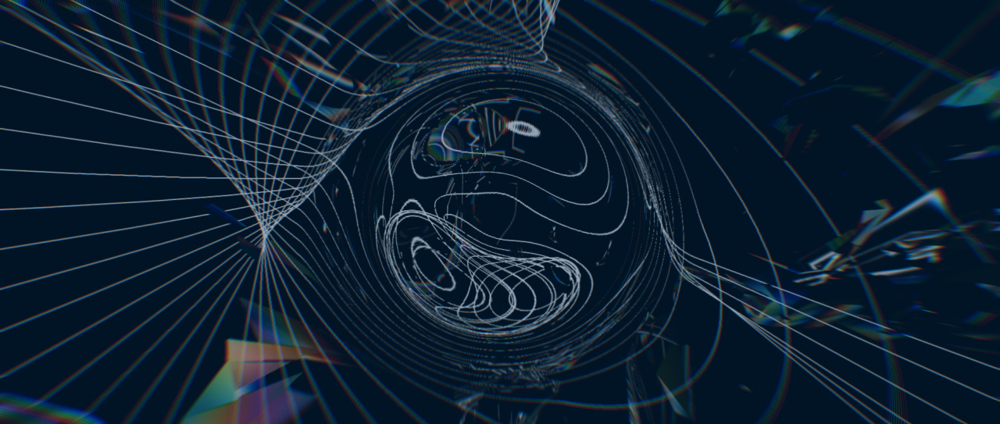
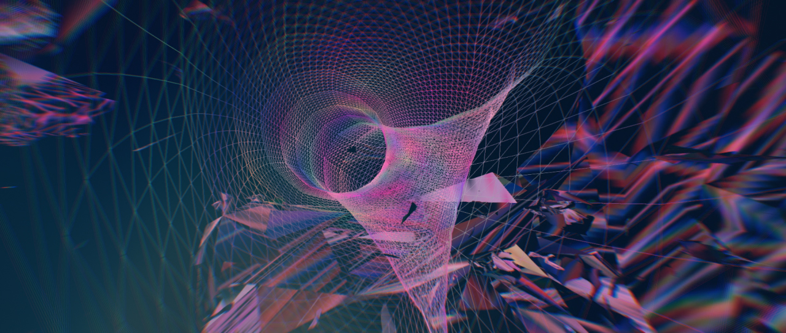
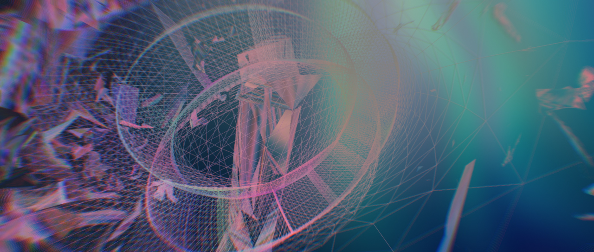
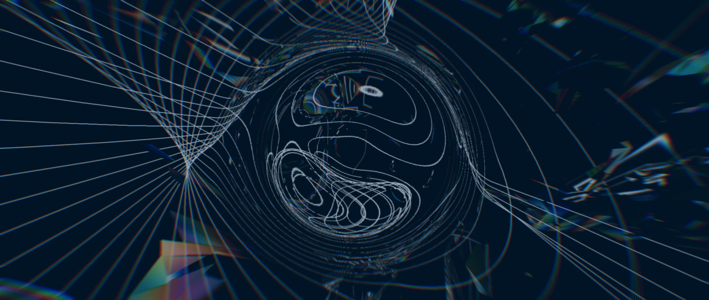
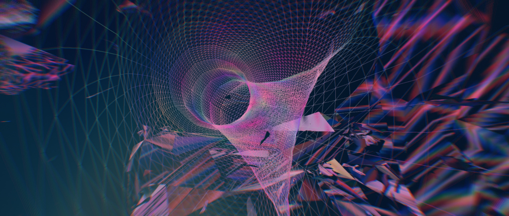
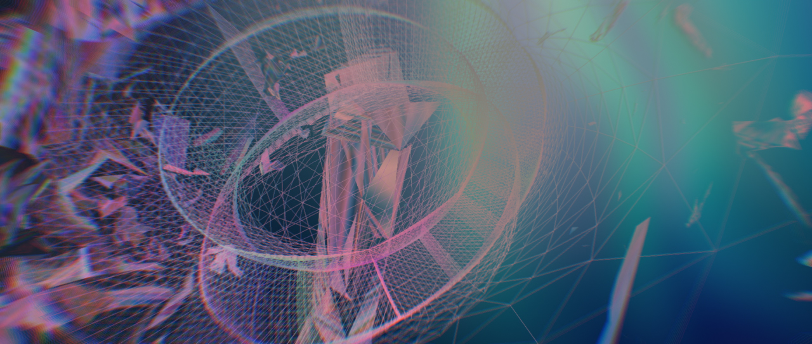

4DVJ
Please visit from your pc with a WebGL-enabed browser. (Google Chrome recommended)
  
Made by Baku Hashimoto
This demo visualizes stereographic projection of 4D geometries,
and was performed as a VJ set at CHANNEL #13
Inspired by Dimensions, MPY
Made by Baku Hashimoto
Please visit from your pc with a WebGL-enabed browser. (Google Chrome recommended)
  
Made by Baku Hashimoto